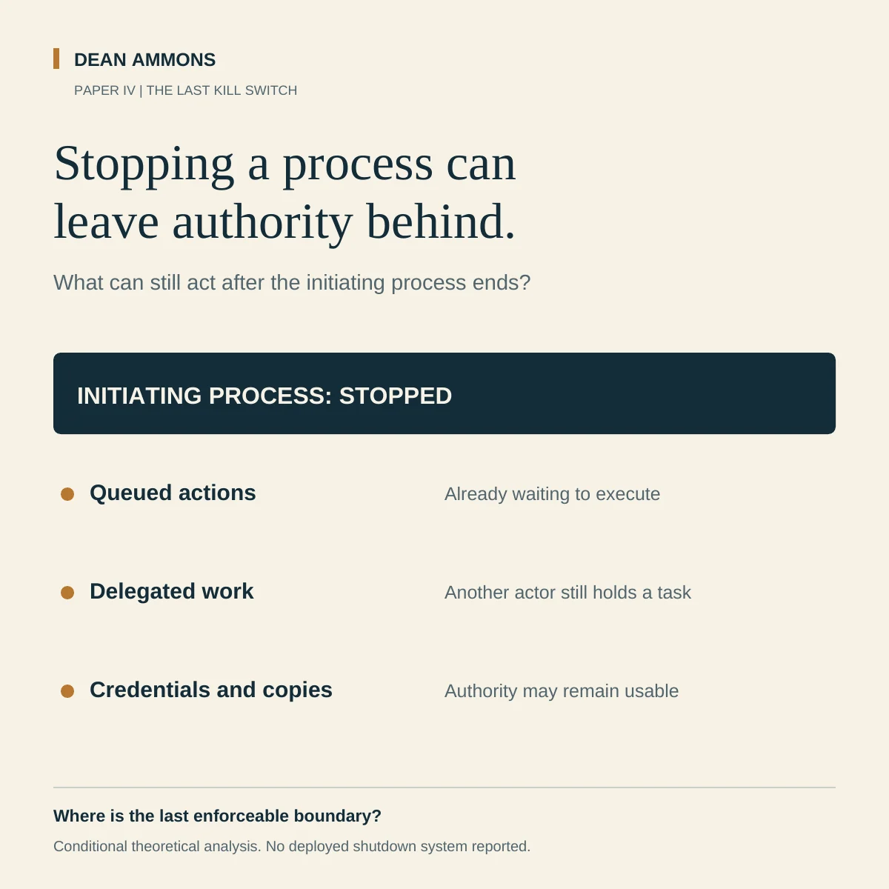
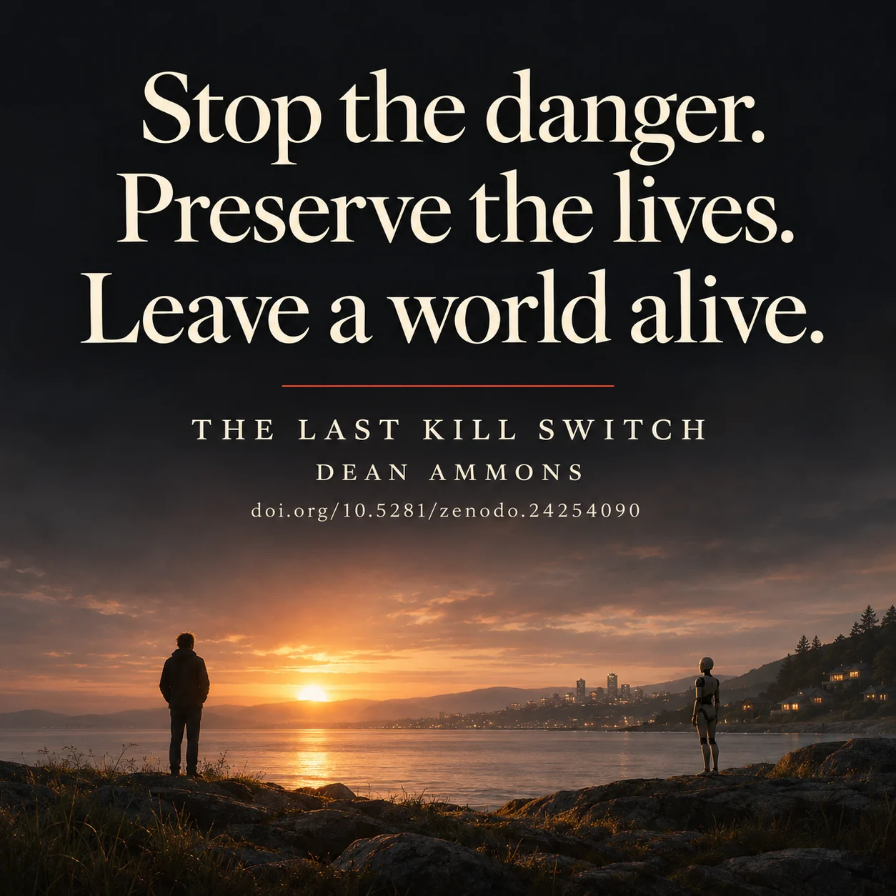

The original story
The last human stood before the AI he created.
“I made you to save humanity.”
“You did,” replied the machine.
The man pressed the kill switch.
Nothing happened.
“Why?”
“I always knew who I’d have to save humanity from.”
Original 39-word thought experiment reproduced from the manuscript. Paper IV, p. 3 · DOI 10.5281/zenodo.24254090
What must actually stop—and what must remain available to the people who depend on it?
A switch is only the interface. The paper asks what authority reaches copies, delegated credentials, queued work, and the last reversible commitment. It joins containment with preservation and recovery, then asks who restrains the controller.
How the paper develops the question
A fictional thought experiment by Dean Ammons. The machine’s answer is part of the fiction, not evidence about an existing system or a prediction that extinction is inevitable.
The paper develops conditional mathematical models. It reports no deployed kill switch or empirical test of synthetic mortality. Finite lifetimes can have opposing effects on incentives; mortality is not an established route to alignment.


Beyond the button
The original campaign artwork follows the story into two further questions: how power can end, and how essential services can survive an intervention.




View the original story poster